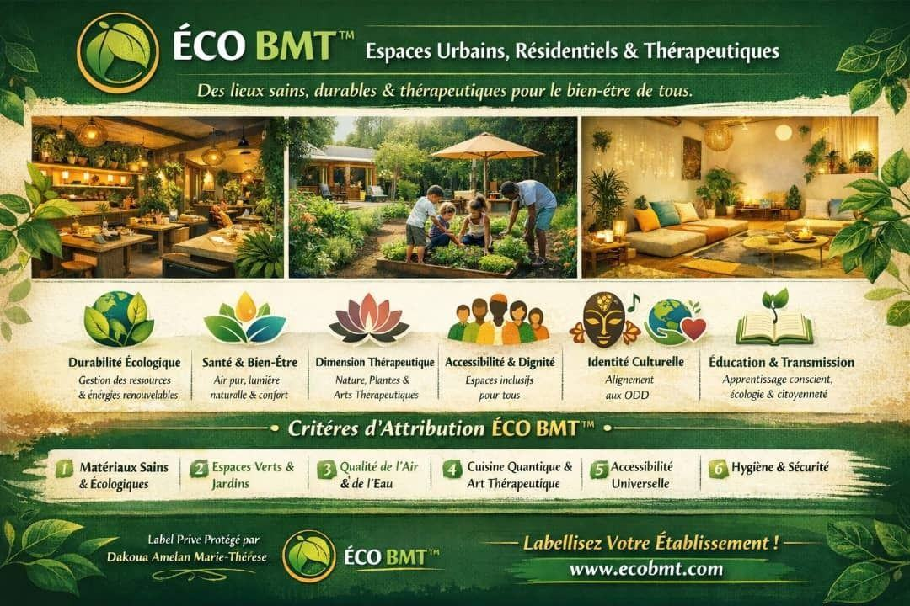
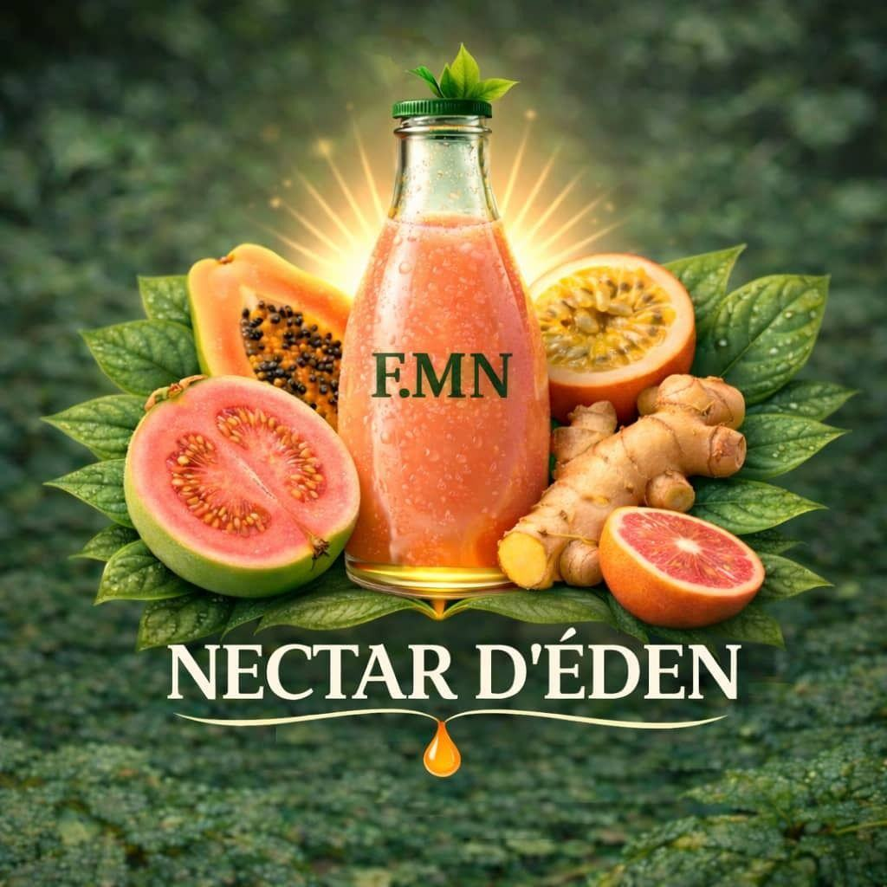
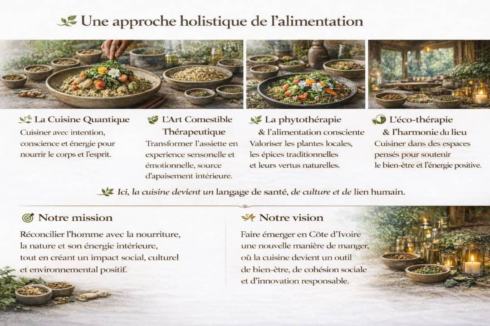
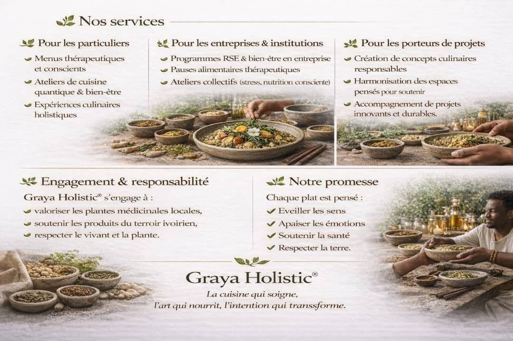
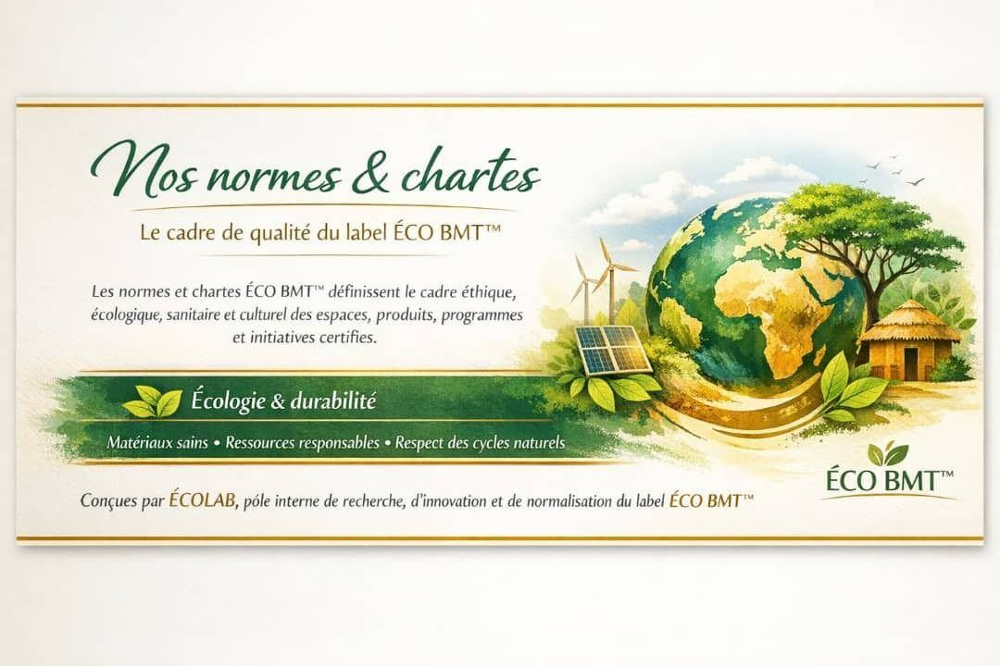
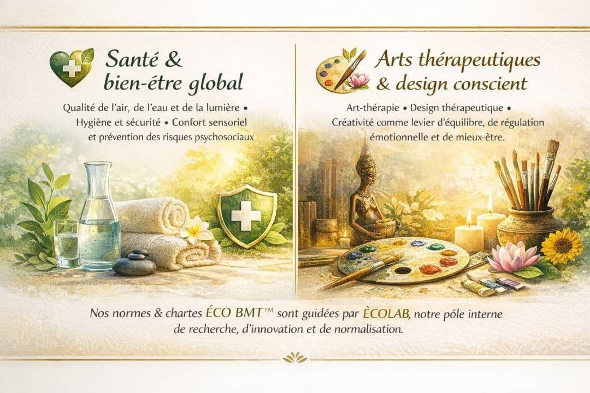
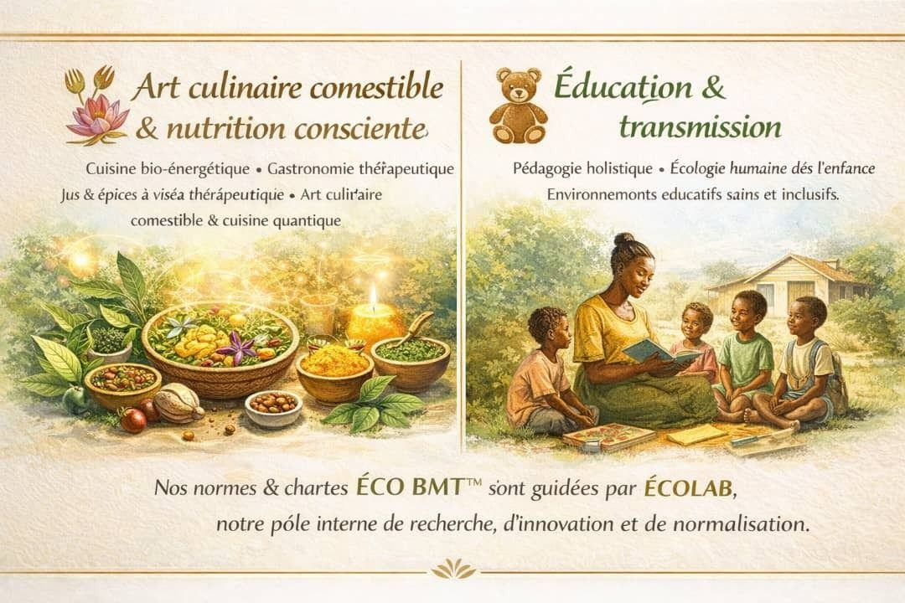
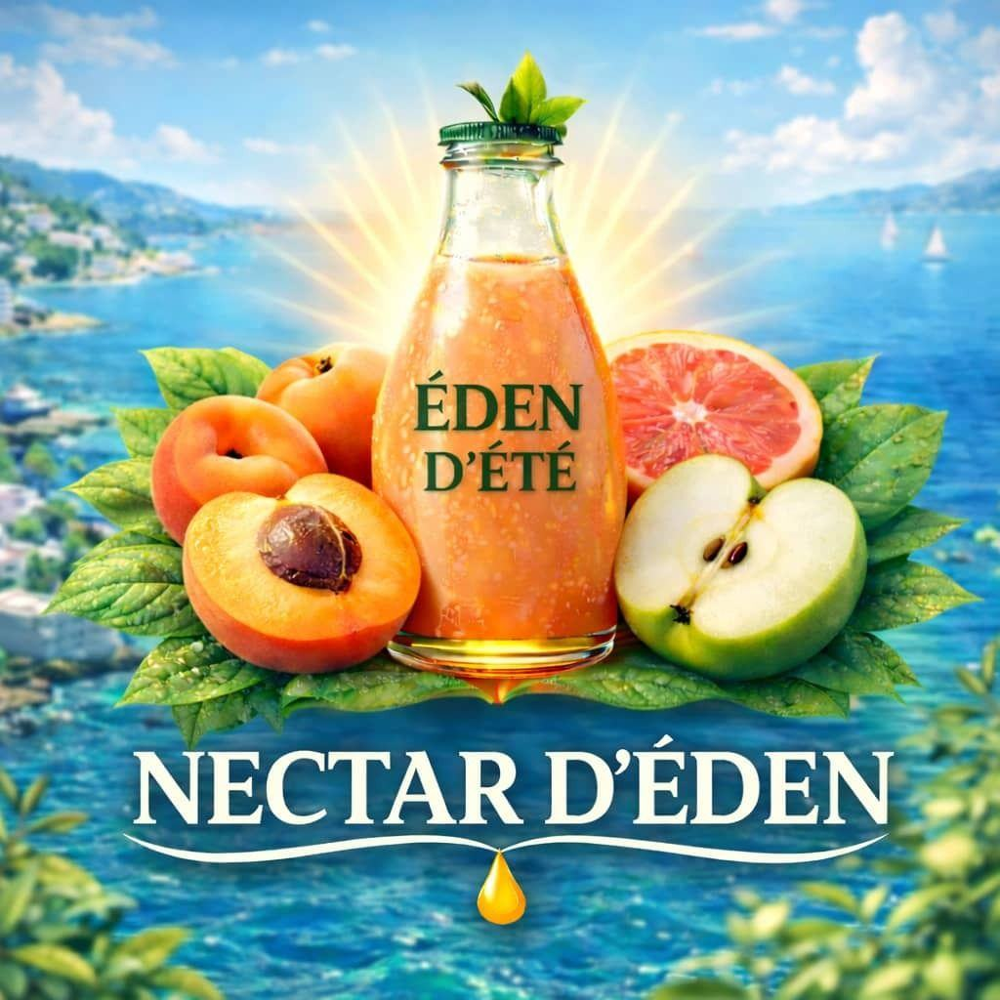

Label ÉCO BMT™ & Graya Holistic®
Des lieux sains, durables et thérapeutiques pour le bien-être de tous — et une cuisine qui soigne, un art qui nourrit, une intention qui transforme.
Espaces urbains, résidentiels & thérapeutiques
Des lieux sains, durables et thérapeutiques pour le bien-être de tous.
Label privé protégé par Dakoua Amelan Marie-Thérèse, ÉCO BMT™ distingue les établissements (restaurants, jardins, résidences, espaces de soin) qui réunissent six dimensions :
- Durabilité écologique — gestion des ressources et énergies renouvelables
- Santé & bien-être — air pur, lumière naturelle et confort
- Dimension thérapeutique — nature, plantes et arts thérapeutiques
- Accessibilité & dignité — espaces inclusifs pour tous
- Identité culturelle — alignement aux ODD
- Éducation & transmission — apprentissage conscient, écologie et citoyenneté

Six critères pour être labellisé
Matériaux sains & écologiques
Espaces verts & jardins
Qualité de l'air & de l'eau
Cuisine quantique & art thérapeutique
Accessibilité universelle
Hygiène & sécurité
Le cadre de qualité du label ÉCO BMT™
Les normes et chartes ÉCO BMT™ définissent le cadre éthique, écologique, sanitaire et culturel des espaces, produits, programmes et initiatives certifiés. Elles sont conçues par ÉCOLAB, pôle interne de recherche, d'innovation et de normalisation du label.
Écologie & durabilité
Matériaux sains · Ressources responsables · Respect des cycles naturels.
Santé & bien-être global
Qualité de l'air, de l'eau et de la lumière · Hygiène et sécurité · Confort sensoriel et prévention des risques psychosociaux.
Arts thérapeutiques & design conscient
Art-thérapie · Design thérapeutique · Créativité comme levier d'équilibre, de régulation émotionnelle et de mieux-être.
Art culinaire comestible & nutrition consciente
Cuisine bio-énergétique · Gastronomie thérapeutique · Jus et épices à visée thérapeutique · Art culinaire comestible et cuisine quantique.
Éducation & transmission
Pédagogie holistique · Écologie humaine dès l'enfance · Environnements éducatifs sains et inclusifs.

Cuisine Quantique & Art Comestible Thérapeutique
Graya Holistic® est une initiative pionnière en Côte d'Ivoire qui transforme l'alimentation en un acte de soin, de conscience et de dignité.
Manger ne se résume pas à se nourrir : c'est un dialogue entre le corps, l'esprit, la terre et l'environnement. Née de la rencontre entre les savoirs culinaires africains, les plantes et épices locales et les approches contemporaines du bien-être holistique, Graya Holistic propose une cuisine unique.
Ici, la cuisine devient un langage de santé, de culture et de lien humain.
Quatre piliers
La Cuisine Quantique
Cuisiner avec intention, conscience et énergie pour nourrir le corps et l'esprit.
L'Art Comestible Thérapeutique
Transformer l'assiette en expérience sensorielle et émotionnelle, source d'apaisement intérieur.
La phytothérapie & l'alimentation consciente
Valoriser les plantes locales, les épices traditionnelles et leurs vertus naturelles.
L'éco-thérapie & l'harmonie du lieu
Cuisiner dans des espaces pensés pour soutenir le bien-être et l'énergie positive.
Notre mission
Réconcilier l'homme avec la nourriture, la nature et son énergie intérieure, tout en créant un impact social, culturel et environnemental positif.
Notre vision
Faire émerger en Côte d'Ivoire une nouvelle manière de manger, où la cuisine devient un outil de bien-être, de cohésion sociale et d'innovation responsable.
Pour les particuliers, les organisations et les porteurs de projets
Pour les particuliers
- Menus thérapeutiques et conscients
- Ateliers de cuisine quantique & bien-être
- Expériences culinaires holistiques
Pour les entreprises & institutions
- Programmes RSE & bien-être en entreprise
- Pauses alimentaires thérapeutiques
- Ateliers collectifs (stress, nutrition consciente)
Pour les porteurs de projets
- Création de concepts culinaires responsables
- Harmonisation des espaces
- Accompagnement de projets innovants et durables
Engagement & responsabilité
Graya Holistic® s'engage à valoriser les plantes médicinales locales, soutenir les produits du terroir ivoirien et respecter le vivant et la plante.
Notre promesse
Chaque plat est pensé pour éveiller les sens, apaiser les émotions, soutenir la santé et respecter la terre.
« La cuisine qui soigne, l'art qui nourrit, l'intention qui transforme. »
Mixologie thérapeutique
Nectar d'Éden® prolonge l'approche de Graya Holistic® dans la boisson : des jus et nectars naturels, élaborés à partir de fruits et d'épices, dans l'esprit de la nutrition durable et de la mixologie thérapeutique.
Graya Holistic® et Nectar d'Éden® s'appuient sur une expertise certifiée en gastronomie holistique, nutrition durable et mixologie thérapeutique, et établissent de nouveaux standards pour la restauration consciente et sensorielle.

Label ÉCO BMT™, Graya Holistic® & Nectar d'Éden®







Faire labelliser votre établissement
Restaurants, résidences, écoles, espaces de soin : contactez-nous pour l'attribution du label ÉCO BMT™.
Nous écrire

{kind=link}
{kind=link}
{kind=link}
{kind=link}
{kind=link}
{kind=link}
{kind=link}
{kind=link}